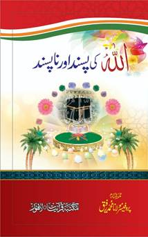

"احادیث قدسیہ" ایک اہم کتاب ہے جوپروفیسر محمد رفیق چوہدری نے لکھی ہے۔ یہ کتاب احادیث کے ایک خاص مجموعے پر مشتمل ہے، جسے احادیث قدسی کہا جاتا ہے۔ احادیث قدسی وہ مبارک ارشادات ہیں جو بظاہر تو نبی کریم صلی اللہ علیہ وسلم نے بیان فرمائے ہیں، لیکن ان میں اللہ تعالیٰ کا کلام شامل ہوتا ہے۔ یہ کتاب ان خاص احادیث کو جمع کرتی ہے اور ان کی تشریح پیش کرتی ہے۔ اس کے مطالعہ سے قاری کو اللہ تعالیٰ کے قرب اور اس کی صفات کے بارے میں گہرا علم حاصل ہوتا ہے، اور ایمان میں مضبوطی پیدا ہوتی ہے۔ یہ روحانیت اور ہدایت کے حصول کے لیے ایک بہترین ذریعہ ہے۔
قیمت 250 .صفحات 200

کتاب "اللہ کی پسند و ناپسند" پروفیسر محمد رفیق چودھری کی علمی کاوش ہے جو قرآن و سنت کی روشنی میں تحریر کی گئی ہے۔ اس میں اُن صفات اور اعمال کا ذکر ہے جو اللہ تعالیٰ کو محبوب یاناپسند ہیں۔ کتاب دو حصوں پر مشتمل ہے: ایک میں اللہ کی پسندیدہ صفات، اوردوسرے میں ناپسندیدہ عادات کا بیان ہے۔ یہ کتاب ہمیں ایک مؤمن کی زندگی کے اصول سکھاتی ہے اور اللہ کی رضا حاصل کرنے کی راہ دکھاتی ہے۔ سادہ زبان اور قرآنی حوالوں کے ساتھ لکھی گئی یہ کتاب ہر مسلمان کے لیے مفید ہے۔ ایمان، تقویٰ، صبر، اور عدل جیسے اوصاف اپنانے کی ترغیب دی گئی ہے جبکہ جھوٹ، ظلم، اور فحاشی سے بچنے کی ہدایت کی گئی ہے۔
قیمت 250 .صفحات 200
